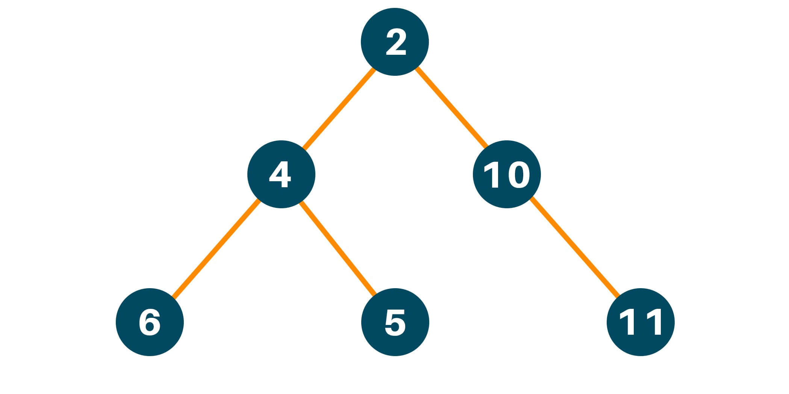
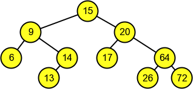

Definición y características:
Arrays (Arreglos) es una estructura de datos que almacena una colección de elementos del mismo tipo en una secuencia contigua en memoria. Cada elemento del arreglo puede ser accedido mediante un índice, que generalmente comienza en 0.
Características principales de los arrays
- Tiene un nombre de variable único que representa a cada elemento dentro de él y estos elementos son diferenciados por un índice.
- Los elementos dentro del array son guardados en posiciones de memoria de forma continua.
- Se puede acceder a cada elemento individual del array de manera directa o aleatoria.
Operaciones básicas: acceso, inserción, eliminación
Acceso:
- Puedes acceder a un elemento en el arreglo utilizando su índice. Por ejemplo, en un arreglo A con 5 elementos, A[2] te dará el tercer elemento del arreglo
- En pseudo-código: elemento = A[indice]

Inserción:
- Insertar un elemento en un arreglo puede ser un poco complicado si el tamaño es fijo. Si el tamaño del arreglo es dinámico, puedes agregar elementos al final.
- En un arreglo de tamaño fijo, la inserción de un nuevo elemento a menudo implica mover elementos para hacer espacio, lo cual puede ser costoso.
- Ejemplo en pseudo-código: Para insertar en la posición i, podrías mover todos los elementos desde i hasta el final una posición hacia adelante y luego colocar el nuevo elemento en i.

Eliminación:
- La eliminación de un elemento también puede ser costosa en un arreglo de tamaño fijo, ya que a menudo implica mover todos los elementos posteriores al elemento eliminado.
- Ejemplo en pseudo-código: Para eliminar el elemento en la posición i, debes mover todos los elementos desde i+1 hasta el final una posición hacia atrás para llenar el hueco.

Arrays multidimensionales
Un array multidimensional es una estructura de datos que contiene otros arrays como elementos. Puedes imaginarlo como una matriz en la que cada celda puede contener otro array, permitiendo la creación de estructuras de datos complejas y jerárquicas.
Una lista enlazada es una estructura de datos compuesta por nodos. Cada nodo contiene un valor y una referencia (o enlace) al siguiente nodo en la secuencia. Las listas enlazadas permiten una inserción y eliminación de elementos eficientes, especialmente en comparación con los arrays, donde estos procesos pueden ser más costosos.
Listas enlazadas simples
- Cada nodo contiene un valor y una referencia al siguiente nodo.
- Permite recorrer la lista en una sola dirección, desde el comienzo hasta el final.

Listas doblemente enlazadas
- Cada nodo contiene un valor y una referencia al siguiente nodo.
- Permite recorrer la lista en una sola dirección, desde el comienzo hasta el final.

Listas circularmente enlazadas
Una lista enlazada circular es una variación de la lista enlazada. Es una lista enlazada cuyos nodos están conectados de tal manera que forma un círculo, también pueden ser vistas como listas sin comienzo ni fin. En pocas palabras una lista enlazada circular, el primer y el último nodo están unidos juntos.

Operaciones básicas: inserción, eliminación, búsqueda
Inserción:
- Al Principio: Se actualiza el puntero de la cabeza de la lista para apuntar al nuevo nodo.
- Al Final: Se encuentra el último nodo y se ajusta su puntero para apuntar al nuevo nodo.
- En Medio: Se ajustan los punteros de los nodos adyacentes al nuevo nodo.
Eliminación:
- Del Principio: Se actualiza el puntero de la cabeza de la lista para que apunte al siguiente nodo.
- Del Final: Se encuentra el penúltimo nodo y se ajusta su puntero para que apunte a null o fin de la lista
- De un Nodo Específico: Se ajustan los punteros de los nodos adyacentes al nodo que se elimina
Búsqueda:
- Se recorre la lista desde la cabeza hasta encontrar el nodo que contiene el valor deseado.
Las pilas (stacks) son una estructura de datos donde tenemos una colección de elementos, y sólo podemos hacer dos cosas:
- Añadir un elemento al final de la pila.
- Sacar el último elemento de la pila.
Principio LIFO (Last In, First Out)
En una pila, el último elemento insertado es el primero en ser retirado. Puedes pensar en una pila como una pila de platos: puedes agregar un plato en la parte superior y solo puedes retirar el plato de la parte superior.
Operaciones: push, pop, peek
- Push: Agrega un elemento en la parte superior de la pila.
- Pop: Elimina el elemento en la parte superior de la pila y lo devuelve.
- Peek (o Top): Devuelve el elemento en la parte superior de la pila sin eliminarlo
Implementación usando arrays o listas enlazadas

Una cola FIFO garantiza que los artículos se procesan en el orden exacto en que se reciben. Imagínesela como la cola de una cafetería, donde el primer cliente en llegar es el primero en ser atendido.
Colas simples
Las colas simples son la forma más básica de una estructura de cola. En este tipo, los elementos se añaden al final y se retiran del frente siguiendo el principio FIFO (First In, First Out).
Colas circulares
Las colas circulares son una variación de las colas simples que usan un arreglo de tamaño fijo para almacenar elementos. Cuando el final del arreglo es alcanzado, el siguiente elemento se coloca al inicio del arreglo, formando un "circular buffer" o buffer circular
Colas de prioridad
En una cola de prioridad, cada elemento tiene una prioridad asociada. Los elementos con mayor prioridad se extraen antes que los elementos con menor prioridad, independientemente de su orden de entrada.
En una cola de prioridad, cada elemento tiene una prioridad asociada. Los elementos con mayor prioridad se extraen antes que los elementos con menor prioridad, independientemente de su orden de entrada.
Operaciones:
- Enqueue(item): Añade un elemento al final de la cola.
- Dequeue(): Retira y devuelve el elemento en el frente de la cola.
- Front (): Devuelve el elemento en el frente de la cola sin retirarlo.
Se les llama estructuras dinámicas, porque las mismas pueden cambiar tanto de forma como de tamaño durante la ejecución del programa. Y estructuras no lineales porque cada elemento del árbol puede tener más de un sucesor
Árbol binario
Un árbol binario es una estructura de datos en la que cada nodo tiene como máximo dos hijos: un hijo izquierdo y un hijo derecho.
Árbol de búsqueda binaria (BST)
Un árbol de búsqueda binaria es un árbol binario en el que, para cada nodo:
- Los valores de todos los nodos en su subárbol izquierdo son menores que el valor del nodo.
- Los valores de todos los nodos en su subárbol derecho son mayores que el valor del nodo. 
Árbol AVL (autobalanceado)
Un árbol AVL es un tipo de árbol binario de búsqueda auto-balanceado. La diferencia de altura entre los subárboles izquierdo y derecho de cualquier nodo no puede ser más de uno. Esto asegura que el árbol se mantenga equilibrado, garantizando tiempos de operación logarítmicos para las operaciones de búsqueda, inserción y eliminación.
.png "Árbol AVL(autobalanceado)")
Árbol B - Árbol N-ario
Un árbol N-ario es una estructura de datos en la que cada nodo puede tener hasta N hijos. Estos árboles son útiles en aplicaciones como sistemas de archivos y estructuras jerárquicas.

Operaciones Básicas:
- Inserción: Añadir un nuevo nodo al árbol.
- Eliminación: Eliminar un nodo del árbol.
- Recorrido: Recorrer el árbol en diferentes órdenes (inorden, preorden, postorden).
Un grafo es una estructura matemática que consta de un conjunto de nodos (o vértices) y un conjunto de aristas (o arcos) que conectan pares de nodos. Los grafos se utilizan para modelar relaciones y conexiones en diversos contextos, como redes sociales, rutas de transporte y muchos más.
Definición y representación (matriz de adyacencia, lista de adyacencia)
Hay dos formas comunes de representar un grafo:
Matriz de adyacencia: El grafo está representado por una matriz cuadrada M de tamaño, donde es el número de vértices. Si hay una arista entre un vértice x y un vértice y, entonces el elemento es 1, de lo contrario, es 0.
Lista de adyacencia: Cada vértice tiene una lista de vértices los cuales son adyacentes a él. Esto causa redundancia en un grafo no dirigido (ya que A existe en la lista de adyacencia de B y viceversa), pero las búsquedas son más rápidas, al costo de almacenamiento extra.
Grafos dirigidos y no dirigidos
Un grafo dirigido o digrafo es un tipo de grafo en el cual las aristas tienen un sentido definido, a diferencia del grafo no dirigido, en el cual las aristas son relaciones simétricas y no apuntan en ningún sentido

Grafos no ponderados
En un grafo no ponderado, las aristas no tienen un valor o peso asociado. La única información que se tiene sobre las aristas es si están presentes o no, es decir, simplemente indican la existencia de una conexión entre dos nodos
Algoritmos básicos: BFS (Breadth-First Search), DFS (Depth-First Search)son dos algoritmos fundamentales para recorrer o buscar en grafos. Ambos tienen diferentes enfoques y aplicaciones dependiendo de la estructura del grafo y el problema en cuestión.

Breadth-First Search (BFS) es un algoritmo que explora los nodos de un grafo nivel por nivel a partir de un nodo inicial. Utiliza una cola para llevar un registro de los nodos que deben ser explorados. Es útil para encontrar el camino más corto en términos de número de aristas en un grafo no ponderado.
Características principales:
- Estrategia de Exploración: Explora todos los nodos al nivel actual antes de pasar al siguiente nivel.
- Estructura de Datos: Utiliza una cola (FIFO) para llevar un registro de los nodos pendientes de explorar.
- Aplicaciones: Encuentra el camino más corto en grafos no ponderados, verifica la conectividad del grafo, y puede ser usado para realizar un recorrido en niveles.
Depth-First Search (DFS) es un algoritmo que explora los nodos de un grafo a lo largo de una rama antes de retroceder y explorar otras ramas. Utiliza una pila (ya sea explícita o implícita mediante recursión) para llevar un registro de los nodos que deben ser explorados.
Características principales:
- Estrategia de Exploración: Explora un camino completo antes de retroceder y explorar otros caminos.
- Estructura de Datos: Utiliza una pila (LIFO) o recursión para llevar un registro de los nodos pendientes de explorar.
- Aplicaciones: Detecta ciclos en un grafo, realiza recorridos completos, y puede ser utilizado para la búsqueda en grafos dirigidos y no dirigidos
Concepto de función hash
Las tablas hash son una estructura de datos que proporciona una forma eficiente de almacenar y buscar datos mediante el uso de una función de hash. Son ampliamente utilizadas en programación y en sistemas de bases de datos debido a su capacidad para realizar operaciones de inserción, eliminación y búsqueda de manera rápida, generalmente en tiempo constante promedio.
Manejo de Colisiones
Las colisiones ocurren cuando dos o más claves diferentes se mapean al mismo índice en la tabla hash. Existen dos métodos comunes para manejar colisiones:
- Encadenamiento (Chaining):
- Descripción: Cada índice de la tabla hash contiene una lista (o cualquier otra estructura de datos) que almacena todos los elementos que se mapean a ese índice. Cuando ocurre una colisión, el nuevo elemento se agrega a la lista existente en ese índice.
- Ventajas: La tabla puede manejar un número arbitrario de elementos, incluso si hay muchas colisiones, y es relativamente simple de implementar.
- Desventajas: La eficiencia puede disminuir si las listas en algunos índices se vuelven largas.
- Dirección Abierta (Open Addressing):
- Descripción: En lugar de usar listas para manejar colisiones, la dirección abierta busca otro índice disponible en la tabla para almacenar el elemento. Este método usa una estrategia para encontrar el siguiente índice libre cuando ocurre una colisión.
Operaciones Básicas en una Tabla Hash
Inserción:
- Encadenamiento:
- Calcula el índice utilizando la función hash.
- Agrega el elemento a la lista en el índice correspondiente.
- Dirección Abierta:
- Calcula el índice utilizando la función hash.
- Si el índice está ocupado, busca un índice libre utilizando el método de manejo de colisiones.
- Inserta el elemento en el índice libre encontrado.
Búsqueda:
- Encadenamiento:
- Calcula el índice utilizando la función hash.
- Recorre la lista en el índice para encontrar el elemento.
- Dirección Abierta:
- Calcula el índice utilizando la función hash.
- Si el índice no contiene el elemento, busca otros índices utilizando el método de manejo de colisiones.
- Si se encuentra el elemento, devuélvelo; si el índice revisado está vacío, el elemento no está en la tabla.
Eliminación:
- Encadenamiento:
- Calcula el índice utilizando la función hash.
- Recorre la lista en el índice para encontrar y eliminar el elemento.
- Dirección Abierta:
- Calcula el índice utilizando la función hash.
- Si el índice contiene el elemento, elimínalo y marca el espacio como disponible.
- Para asegurar que las búsquedas posteriores no se vean afectadas, pueden ser necesarias técnicas adicionales como la reubicación de elementos.